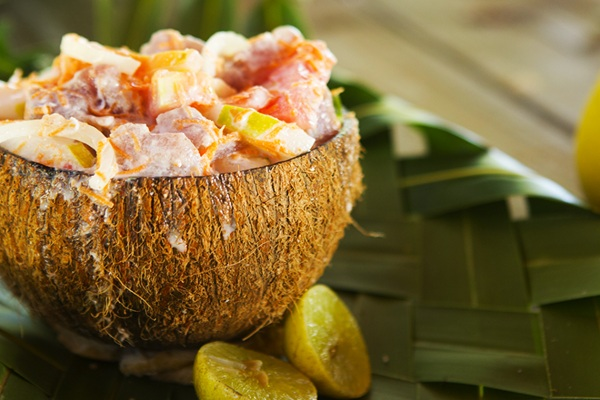

Local Cuisine
Fresh fish, rice, and tropical ingredients shaped by Taniti’s island traditions.
- Casual, family-friendly spots
- Emphasis on fresh seafood
- Often near the waterfront
Taniti offers a variety of dining options, from local dishes centered on fish and rice, to American-style restaurants and Pan-Asian cuisine. Several restaurants are located in Taniti City and around Merriton Landing.

Explore different types of dining across the island. Whether you’re looking for local flavors, familiar comfort food, or something in between, Taniti has a table for you.
Fresh fish, rice, and tropical ingredients shaped by Taniti’s island traditions.
Burgers, sandwiches, and familiar favorites for travelers wanting comfort food.

Pan-Asian options that reflect regional flavors and influences across Asia.

Relax at cafés in the city or enjoy nightlife options in Merriton Landing.